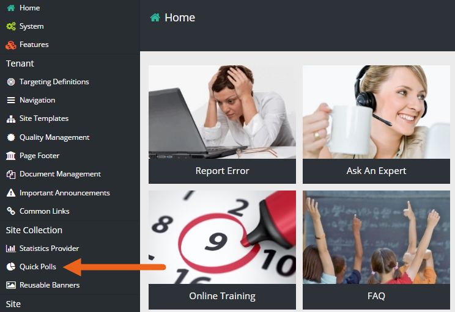
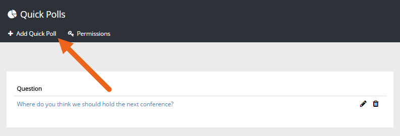
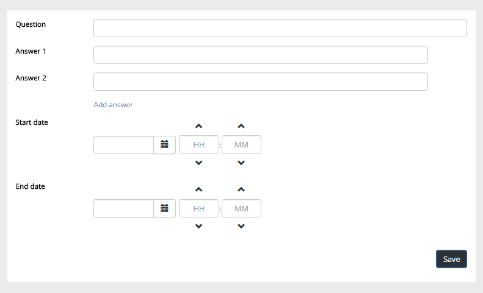
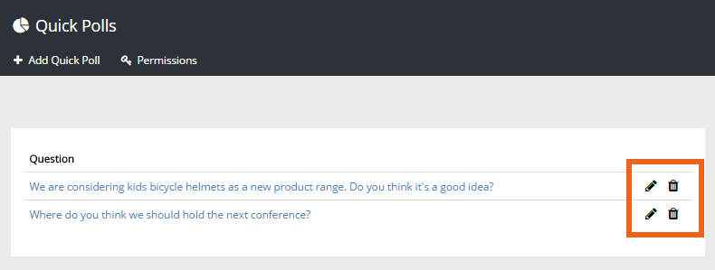
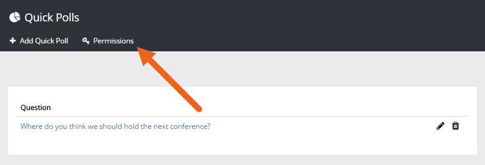
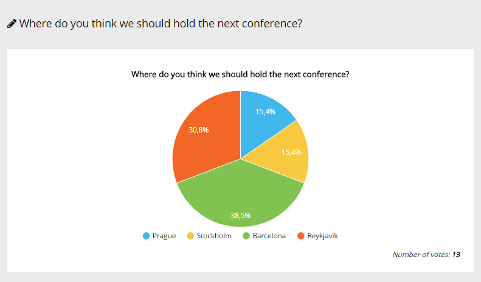

Use Omnia Quick Polls for a quick (!) poll the intranet users can answer. You use this option to create the polls and then any editor can place any active poll on the start page or on any web page in the intranet.
An administrator, and others that are assigned the permissions, can create Quick Polls. Any editor for publishing pages can then add a Quick Poll (or several) to any publisning page. Quick Polls can of course also be added on the start page.
To create a quick poll, do the following:

The list of existing Quick Polls is shown.

Use the following settings:

Question Add the question here.
Answers Add two or more answers to choose from. The default is two answers. Click "Add answer" to add more answer fields.
Start date Select start date and time för the poll.
End date Select end date and time for the poll.
Note! The Quick Poll must be active to be added to a page - withing the start- and end date. If an editor tries to add a poll that is not active, an error message is shown.
Use the icons in the list to edit or delete a poll:

If other colleagues should be able to create Quick Polls, you add them to the permissions list here:

See a Quick Poll's results by clicking the link in the list. The result is shown this way:

Any publishing page editor (including the start page) can add a Quick Poll to a page. See the following page on how that is done: